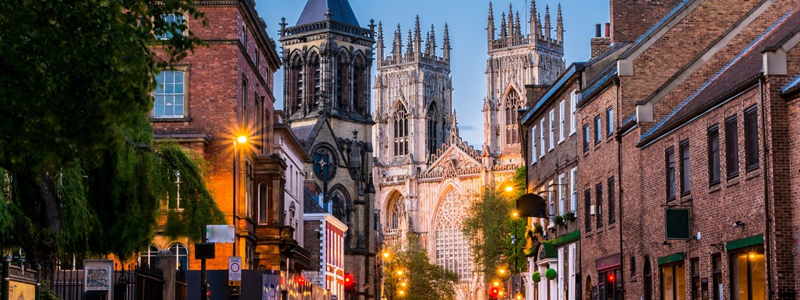

Alleine Reisen: Die 6 ultimativen Tipps für Neulinge!
Um die Angst zu nehmen
27.März 2018 von Lena & Yvonne
Die Sorge, ob Du wirklich das allererste Mal alleine reisen kannst, ist groß. Und lass dir von niemandem einreden, für sie sei der erste Urlaub alleine kein Problem gewesen. Jede/r hat zumindest mal einen Moment lang kalte Füße davor bekommen, das garantieren wir Dir.
Was, wenn Du niemanden kennenlernst und ganz allein bist?
Was, wenn unvorhergesehene Probleme auftreten und Du niemanden fragen kannst? Dein Rucksack, Deine Wertsachen oder Dein Reisepass geklaut wird? Was, wenn Du furchtbares Heimweh hast und Deine Reise
abbrechen willst?
Zu all diesen Fragen gibt es passende Antworten, und niemand wurde zum Alleine-Reisen geboren, auch wenn Dir das auf den vielen Reiseblogs vielleicht so erscheinen mag.
Wir alle haben mal klein angefangen, und ich zeige Dir heute, wie Du den leichtesten Einstieg findest, um alleine reisen zu können:
1. Such Dir ein tolles Ziel aus für deinen Urlaub alleine!
Klar, denkst Du jetzt, was sonst?!
Aber damit meine ich nicht nur einen wunderschönen Ort mit tollen Sehenswürdigkeiten.
Sondern ein Reiseziel, das es Dir einfach macht, das Alleine-Reisen auch wirklich zu genießen. Das touristisch gut angebunden ist und organisatorisch vielleicht in unseren europäischen Standards entspricht.
Als Reise-Neuling in den tiefsten Busch zu fahren, wo es keine Handy-Netzabdeckung gibt und Supermärkte nur das Nötigste anbieten, ist vielleicht nicht ganz ideal.
Wenn Du die Hürde der ersten Reise genommen hast, das Alleinreisen einmal getestet hast und mit einem Erfolgserlebnis zurückkommst (und das wirst Du), kannst Du Dich immer noch an anspruchsvollere Ziele wagen.
2. Wähle ein Land, in dem Englisch eine gängige Sprache ist!
Es ist schwer genug, zum ersten Mal komplett auf seine Muttersprache verzichten zu müssen.
Wenn Du Dich dann auch noch auf eine völlig neue Sprache einstellen musst, wird es richtig anstrengend. Und genau so hast Du Dir Deine erste Reise ja bestimmt nicht vorgestellt: anstrengend!
Es gibt genügend englischsprachige Länder, die eine Reise wert sind, wo das Alleine-Reisen einfach ist und Dir unglaublich schöne Erfahrungen bietet.

Neuseeland, aber auch Irland und Großbritannien (nicht immer musst Du sofort um die halbe Welt alleine reisen) sind nur einige wunderbare Ziele für das erste Mal alleine reisen.
3. Plan Dir bei Deinem ersten Urlaub alleine die ersten Tage durch!
Ich sage nicht, dass Du Deine gesamte Reise bis ins Detail durchstrukturieren sollst, denn wer weiß, vielleicht bist Du die geborene Reisende und nach den ersten Tagen on the road lieber spontan und ungebunden.
Aber es kann Dir helfen, die ersten Tage einfach nichts mehr planen zu müssen und das Land und die Menschen einfach nur auf Dich wirken zu lassen. Das Alleine-Reisen ist dann bereits genug Herausforderung
Buch Dir eine schöne Unterkunft für die ersten Nächte, finde heraus, wie Du vom Flughafen dorthin kommst, und dann lass Dich ein bisschen mitreißen von dem, was Du dort vorfindest.
Wenn Du sehr unsicher bist, buch Deine Unterkünfte für die erste Woche fest ein. Dann kannst Du immer noch vor Ort weiter planen.
4. Alleine reisen in einer Großstadt!
Wo ist es einfacher, zurechtzukommen, als in einer Stadt voller Menschen und wo wirst Du mehr geboten bekommen?
Meine ersten Trips, als ich das Alleinreisen für mich testete, waren kurze Städtetrips.
Dabei kannst Du ganz locker das Alleine-Reisen beschnuppern und bist nach ein paar Tagen schon wieder zu Hause. Ideal, um das Wasser im riesigen Pool der Möglichkeiten zu testen.

Schnapp Dir einen Stadtführer und erkunde die Stadt auf eigene Faust. Möchtest Du lieber schon mal lernen, wie Du alleine reisen und unterwegs Menschen kennenlernen kannst, dann melde Dich bei Couchsurfing an.
In ganz vielen Städten finden darüber einfach nur Treffen der Reisenden statt, die sich zusammenschließen und Unternehmungen planen.
Auch Deine Unterkunft über Airbnb in einer netten WG zu buchen, kann helfen, dass Du Dich beim Alleine-Reisen trotzdem nicht einsam fühlst.
5. Allein reisen, um etwas Neues zu lernen!
Hast Du schon mal daran gedacht, einen Urlaub alleine zu planen, um etwas völlig Neues zu lernen? Natürlich gäbe es da allein schon die Möglichkeit des Sprachkurses, aber wie wäre es mal mit
Surfstunden, Kletterurlaub oder Kochkurs?
In so vielen Ländern dieser Welt kannst Du alleine reisen und nebenbei unglaublich coole Dinge lernen. Und lernst dabei schon automatisch andere Reisende kennen!
Oder lern unterwegs eine neue Fähigkeit! Lern zum Beispiel Deine Kamera mit einem Fotografie Kurs richtig kennen und bring die schönsten Erinnerungsfotos mit nach Hause.
6. Schließ Dich bei Deinem ersten Urlaub alleine einer Gruppenreise an!
Immer noch zu schüchtern für das Alleinreisen oder den ersten Urlaub alleine?
Was spricht denn dann dagegen, einen Urlaub alleine komplett über eine Gruppenreise zu buchen?
So kannst Du zumindest Deine Eigenschaften im Kontakte-Knüpfen verbessern und Deine Wunschziele auch dann endlich in Angriff nehmen, wenn eben niemand Deiner Freunde Lust oder Zeit hat
Eine Bekannte reist regelmäßig allein, da ihr Mann ihre Reiseleidenschaft nicht teilt. Sie hat sogar Japan mal für drei Wochen mit einer Gruppe bereist und kam schwärmend und begeistert zurück!